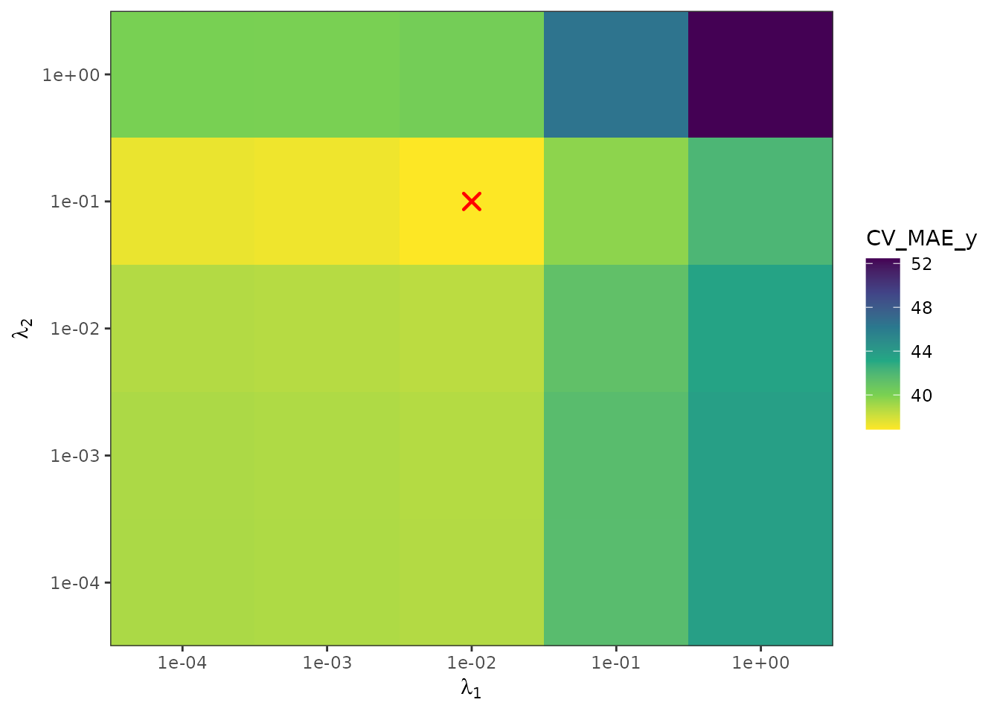
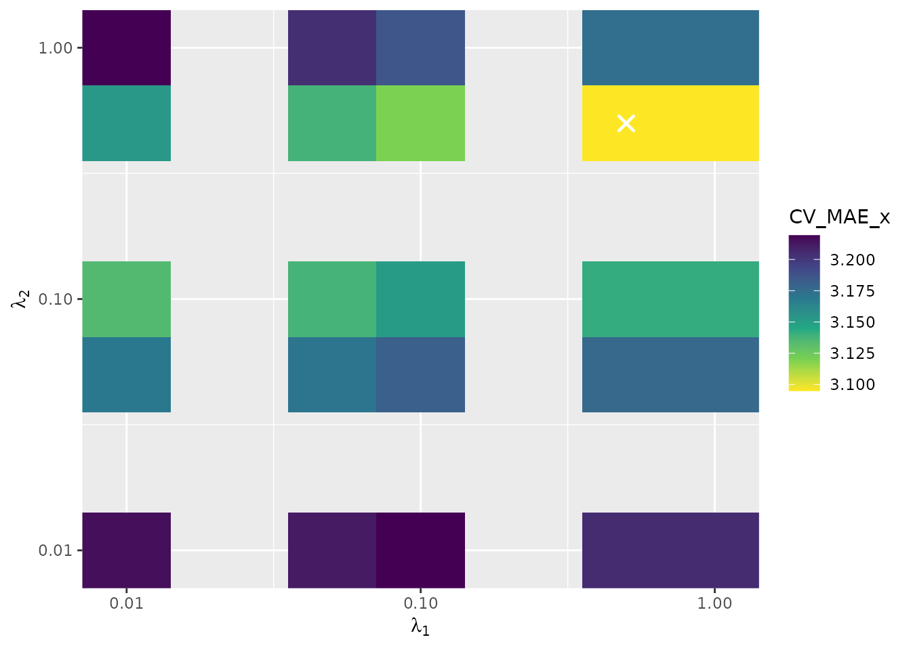
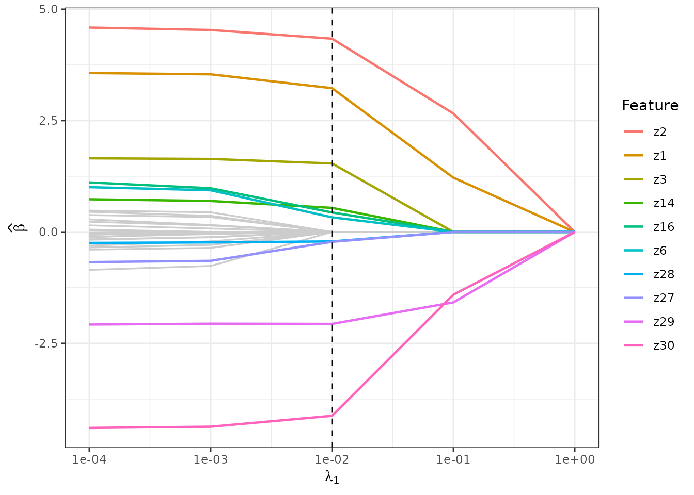
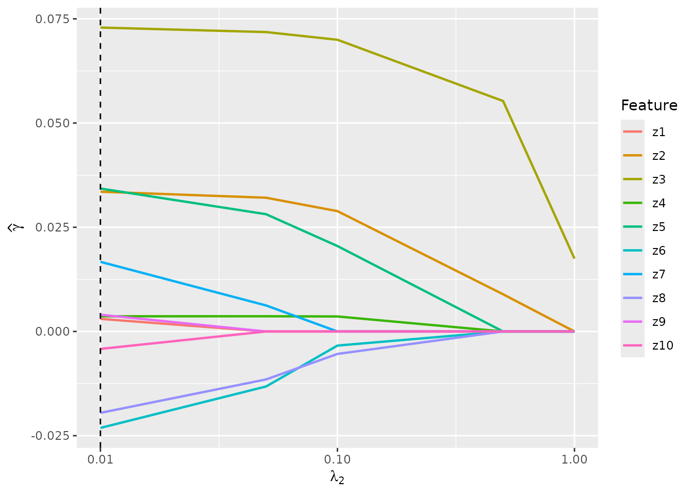
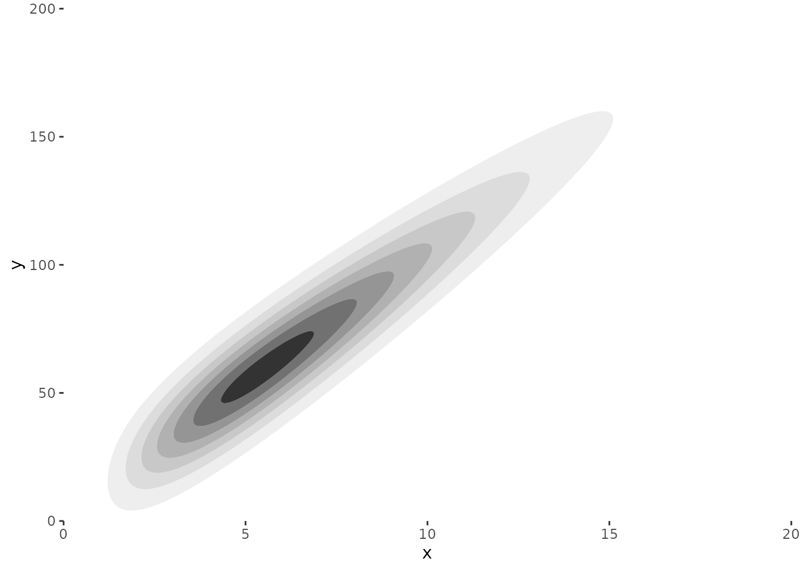
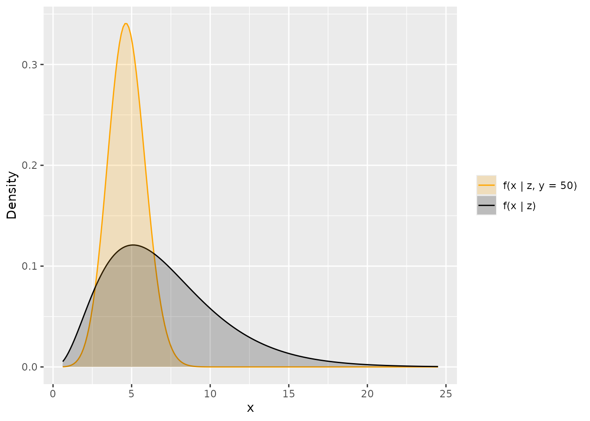

This vignette walks through a complete ccreds workflow:
simulating censored-covariate regression data, fitting the model with
cross-validated penalty selection, and visualising the results.
Setup
library(ccreds)
library(MASS)
library(dplyr)
#>
#> Attaching package: 'dplyr'
#> The following object is masked from 'package:MASS':
#>
#> select
#> The following objects are masked from 'package:stats':
#>
#> filter, lag
#> The following objects are masked from 'package:base':
#>
#> intersect, setdiff, setequal, unionSimulate data
We generate data from the censored-covariate regression model with \(n = 200\) observations and \(p = 10\) features.
Response-variable model: \[y_i = \beta_0 + \alpha x_i + \pmb{\beta}^\top \mathbf{z}_i + \varepsilon_i, \quad \varepsilon_i \sim N(0, \sigma^2)\]
Censored-covariate model: \[X_i \mid \mathbf{z}_i \sim \chi^2(\mu_i), \quad \mu_i = \exp(\gamma_0 + \pmb{\gamma}^\top \mathbf{z}_i)\]
We set \(\pmb{\beta}\) and \(\pmb{\gamma}\) to be sparse with partially overlapping support, so that some features affect only the response, some affect only the censored covariate, and some affect both.
set.seed(8371)
n <- 200
p <- 10
# Correlated features (AR(0.5) structure)
rho <- 0.5
Sigma <- 9 * toeplitz(rho^(0:(p - 1)))
z <- mvrnorm(n = n, mu = rep(0, p), Sigma = Sigma)
# True parameters
beta_0 <- 5
alpha <- 10
beta <- c(4, 4, 2, 0, 0, 0, 0, 0, -2, -4)
sigma_sq <- 100
gamma_0 <- 2
gamma <- c(0, 0.04, 0.04, 0.02, 0.02, 0, 0, 0, 0, 0)
# Generate the censored covariate x
x_mean <- exp(cbind(1, z) %*% c(gamma_0, gamma)) |> drop()
x <- rchisq(n, df = x_mean)
# Generate censoring times to achieve ~50% censoring
compute_c_mean <- function(censoring_rate, x_mean) {
f <- function(c_mean) {
1 - pbeta(0.5, x_mean / 2, c_mean / 2) - censoring_rate
}
uniroot(f, lower = 1e-12, upper = 1000)$root
}
c_mean <- vapply(x_mean, \(m) compute_c_mean(0.5, m), numeric(1))
cens <- rchisq(n, df = c_mean)
# Generate response
e <- rnorm(n, mean = 0, sd = sqrt(sigma_sq))
y <- cbind(1, x, z) %*% c(beta_0, alpha, beta) + e
# Observed covariate and censoring indicator
w <- pmin(x, cens)
d <- as.numeric(x <= cens)
# Assemble the data frame in the format ccreds() expects
z_df <- as.data.frame(z)
colnames(z_df) <- paste0("z", 1:p)
dat <- tibble(
case = 1:n,
y = drop(y),
w = w,
d = d
) |>
bind_cols(z_df)
dat
#> # A tibble: 200 × 14
#> case y w d z1 z2 z3 z4 z5 z6 z7
#> <int> <dbl> <dbl> <dbl> <dbl> <dbl> <dbl> <dbl> <dbl> <dbl> <dbl>
#> 1 1 176. 9.32 0 1.07 5.09 -1.76 -5.49 -1.21 -6.77 -6.46
#> 2 2 50.9 4.03 1 3.85 0.857 -2.32 -5.36 -5.48 -3.39 -2.34
#> 3 3 54.6 3.44 1 -4.05 1.53 -4.13 2.95 -1.12 -1.33 -4.18
#> 4 4 3.39 3.17 0 -5.46 -2.77 -1.82 -0.0966 -5.03 1.25 -1.25
#> 5 5 98.4 7.10 1 -1.21 2.93 -1.24 -5.62 -1.16 0.253 -1.52
#> 6 6 171. 12.5 1 2.88 3.54 4.06 -1.46 1.33 3.93 4.62
#> 7 7 185. 15.3 1 -1.69 7.12 4.40 3.00 1.65 0.845 -0.617
#> 8 8 128. 3.56 0 0.582 0.351 -2.86 -0.813 -4.13 -5.91 -5.39
#> 9 9 85.2 2.65 0 1.64 -1.65 0.550 0.277 1.14 -0.174 -3.74
#> 10 10 256. 9.70 0 -1.55 -0.150 3.39 3.62 1.91 1.06 1.28
#> # ℹ 190 more rows
#> # ℹ 3 more variables: z8 <dbl>, z9 <dbl>, z10 <dbl>
mean(dat$d == 0)
#> [1] 0.445Fit the model
We search over a small grid of penalty parameters. In practice you
would use a finer grid and potentially run in parallel with
cores > 1.
lambda_1s <- c(0.01, 0.05, 0.1, 0.5, 1)
lambda_2s <- c(0.01, 0.05, 0.1, 0.5, 1)
results <- ccreds(
data = dat,
lambda_1s = lambda_1s,
lambda_2s = lambda_2s,
k = 5
)
results
#> # A tibble: 25 × 8
#> lambda_1 lambda_2 full_fit CV_MAE_y CV_MAE_y_SE CV_MAE_x CV_MAE_x_SE
#> <dbl> <dbl> <list> <dbl> <dbl> <dbl> <dbl>
#> 1 0.01 0.01 <named list [13]> 35.0 1.74 3.22 0.176
#> 2 0.01 0.05 <named list [13]> 35.1 1.61 3.17 0.148
#> 3 0.01 0.1 <named list [13]> 35.2 1.63 3.13 0.139
#> 4 0.01 0.5 <named list [13]> 36.2 1.69 3.15 0.133
#> 5 0.01 1 <named list [13]> 38.6 1.93 3.22 0.220
#> 6 0.05 0.01 <named list [13]> 35.7 2.08 3.21 0.176
#> 7 0.05 0.05 <named list [13]> 35.9 1.99 3.17 0.143
#> 8 0.05 0.1 <named list [13]> 36.2 2.13 3.14 0.129
#> 9 0.05 0.5 <named list [13]> 38.0 2.18 3.14 0.132
#> 10 0.05 1 <named list [13]> 41.2 2.37 3.20 0.225
#> # ℹ 15 more rows
#> # ℹ 1 more variable: time <drtn>Identify the best model
The best \((\lambda_1, \lambda_2)\)
pair is chosen by minimising the cross-validated mean absolute error for
the response, CV_MAE_y.
best <- results |> slice_min(CV_MAE_y, n = 1)
best |> select(lambda_1, lambda_2, CV_MAE_y)
#> # A tibble: 1 × 3
#> lambda_1 lambda_2 CV_MAE_y
#> <dbl> <dbl> <dbl>
#> 1 0.01 0.01 35.0
fit <- best$full_fit[[1]]We can inspect the estimated coefficients and compare them to the truth:
# Response-model coefficients
tibble(
feature = paste0("z", 1:p),
true_beta = beta,
estimated_beta = round(fit$beta, 3)
)
#> # A tibble: 10 × 3
#> feature true_beta estimated_beta
#> <chr> <dbl> <dbl>
#> 1 z1 4 3.62
#> 2 z2 4 3.58
#> 3 z3 2 2.02
#> 4 z4 0 0
#> 5 z5 0 0
#> 6 z6 0 0
#> 7 z7 0 0
#> 8 z8 0 0
#> 9 z9 -2 -2.38
#> 10 z10 -4 -3.32
# Censored-covariate coefficients
tibble(
feature = paste0("z", 1:p),
true_gamma = gamma,
estimated_gamma = round(fit$gamma, 5)
)
#> # A tibble: 10 × 3
#> feature true_gamma estimated_gamma
#> <chr> <dbl> <dbl>
#> 1 z1 0 0.00302
#> 2 z2 0.04 0.0335
#> 3 z3 0.04 0.0729
#> 4 z4 0.02 0.00364
#> 5 z5 0.02 0.0343
#> 6 z6 0 -0.0231
#> 7 z7 0 0.0167
#> 8 z8 0 -0.0195
#> 9 z9 0 0.00402
#> 10 z10 0 -0.00418Visualise: Cross-validation heatmap
plot_cv() shows how the CV metric varies over the
penalty grid. The white cross marks the optimal pair.
plot_cv(results)
You can also plot CV_MAE_x (prediction error for the
censored covariate among complete observations):
plot_cv(results, metric = "CV_MAE_x")
Visualise: Coefficient paths
plot_coefficient_paths() shows how the estimated
coefficients change as the penalty parameter varies, holding the other
penalty fixed at the value from the best model.
plot_coefficient_paths(results, component = "beta", highlight = TRUE)
plot_coefficient_paths(results, component = "gamma", highlight = TRUE)
Visualise: Predictive densities
plot_density() displays the joint or conditional density
of \((y, x)\) for a given feature
vector \(\mathbf{z}\).
z_new <- rep(0, p)
plot_density(fit, z = z_new)
Supplying y_given shows the marginal density \(f(x \mid \mathbf{z})\) alongside the
conditional density \(f(x \mid \mathbf{z},
y)\):
plot_density(fit, z = z_new, y_given = 50)
Summary
The typical ccreds workflow is:
-
Prepare data in the required format:
case,y,w,d,z1, …,zp. -
Fit with
ccreds()over a grid of \((\lambda_1, \lambda_2)\) values. -
Select the best model by minimising
CV_MAE_y. -
Visualise with
plot_cv(),plot_coefficient_paths(), andplot_density().